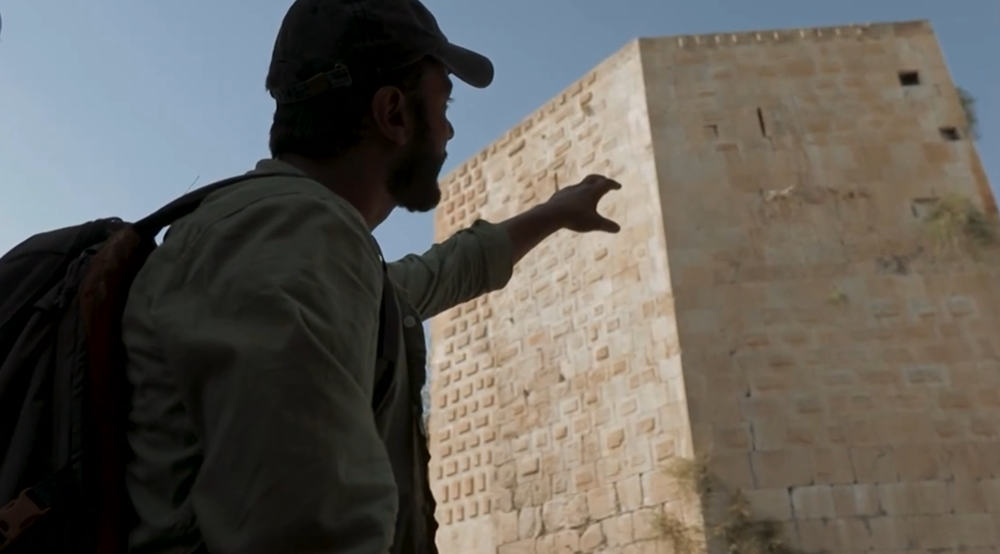
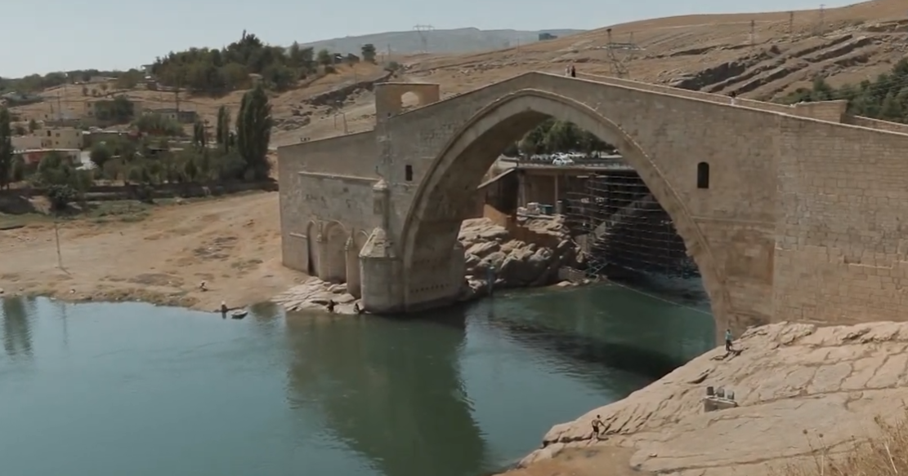
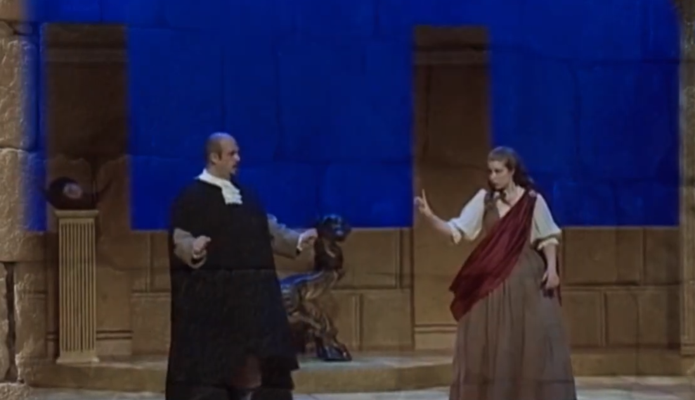
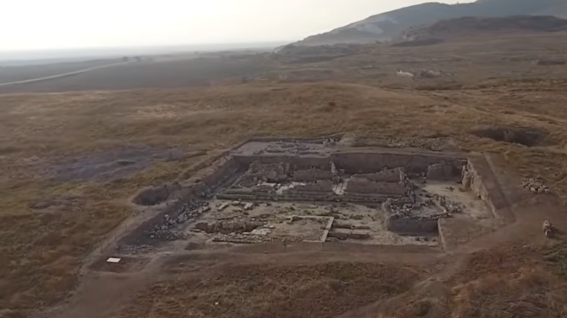
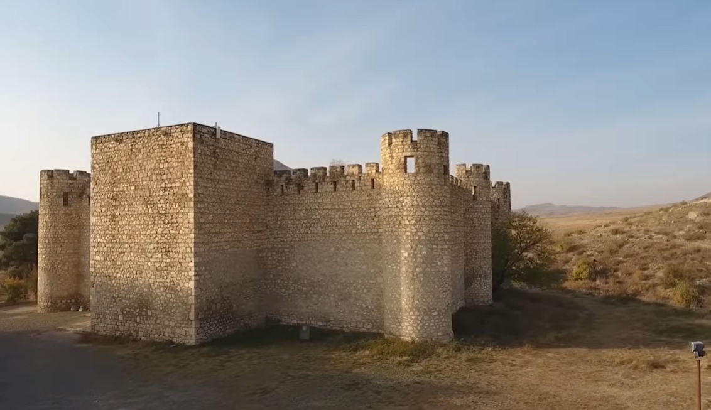
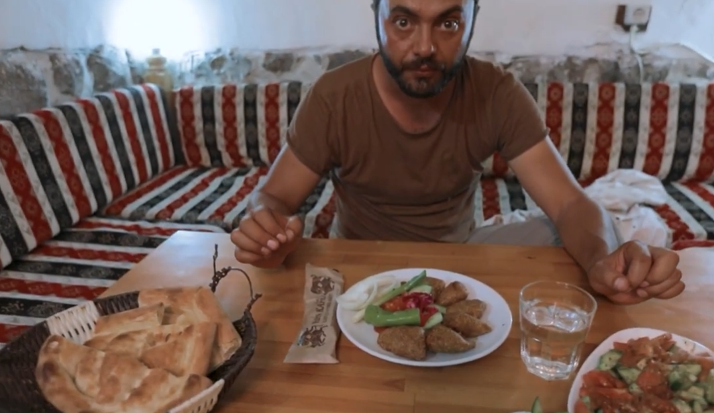

I. Տիգրանակերտ. Մայրաքաղաքի հիմնադրումն ու նախապատմությունը
Հայոց նախնադարյան պատմության մեջ կան հեղինակություններ, որոնք անքննարկելի են, և այդ ցուցակում առաջինը Տիգրան Մեծն է։ Քրիստոսից առաջ 80-ական թվականներին, երբ նա ստեղծեց իր աշխարհակալությունը, անհրաժեշտություն առաջացավ հիմնելու նոր մայրաքաղաք։ Հին մայրաքաղաք Արտաշատն արդեն հայտնվել էր տերության հյուսիսային ծայրամասում, ուստի պետք էր նոր կենտրոն։
Տիգրան Մեծն ընտրեց այն վայրը, որտեղ Քրիստոսից առաջ 95 թվականին, պարթևական պատանդությունից վերադառնալով, թագադրվել էր ինքը. դա հարավային Հայաստանի Աղձնիք աշխարհի տարածքն էր։ Կառուցվեց շքեղագույն մի քաղաք, որի բնակչությունն անցնում էր 100,000-ից՝ դառնալով իր ժամանակի աշխարհի մեծագույն մեգապոլիսներից մեկը։

II. Տեղորոշումը, Սիլվան քաղաքը և Բաթմանի կամուրջը
Պատմական աղբյուրների համաձայն՝ Տիգրանակերտը գտնվել է Մեծ Հայքի Աղձնիք աշխարհում։ Գիտնականների շրջանում երկար ժամանակ ընթացել են բանավեճեր քաղաքի հստակ տեղի վերաբերյալ։ Առավել ընդունված է գերմանացի գիտնական Լեհման-Հաուպտի այն առաջարկը, որ Տիգրանակերտ մայրաքաղաքը պետք է նույնացնել ներկայիս թուրքական Սիլվան քաղաքի տարածքում գտնվող ամրոցի ավերակների հետ։ Ժամանակի ընթացքում այս կառույցը կրել է նաև Նփրկերտ, Մարտիրոսուպոլիս, Մուաֆարգին և այլ անուններ։
Սիլվան քաղաքում և մերձակա շուրջ 45 գյուղերում այսօր բնակվում են մահմեդականացված հայեր։ Նրանց զգալի մասը 1915 թվականի Մեծ եղեռնի ժամանակ Մուշից և Սասունից տեղահանված ու իսլամացված հայերի սերունդներն են։ Նրանք պահպանել են իրենց հայ լինելու հիշողությունը և հպարտությամբ են խոսում այդ մասին։
Տիգրանակերտ տանող ճանապարհն անցնում է լեգենդար Բաթմանի կամրջով, որը գտնվում է նույնանուն գետի վրա։ Այն ունի 50-ից 60 մետր երկարությամբ թռիչք և տարածաշրջանի գեղեցկագույն կառույցներից մեկն է։ 2016 թվականին ՅՈՒՆԵՍԿՕ-ն այս կամուրջը գրանցել է Համաշխարհային ժառանգության ցուցակում։ Արաբ պատմիչների վկայությամբ՝ այն վերականգնվել է 12-րդ դարում, սակայն կառուցվել է 7-րդ դարում հայ վարպետների կողմից։

III. Մշակութային կյանքը, թատրոնը և պատմական հետքերը
Տիգրան Մեծի տերության հզորությունն իր արտացոլումն էր գտնում մայրաքաղաքի մշակութային և կրթական կյանքում․
Առաջին Անտիկ Թատրոնը

Հռոմեացի պատմիչ Պլուտարքոսի հաղորդմամբ՝ Տիգրանակերտում գործել է հունական թատրոն, որը կառուցվել էր Ք.ա. 69 թվականից առաջ։ Այստեղ ներկայացումները բեմադրվում էին հունարենով, հրավիրվում էին հույն դերասաններ, և հայ ազնվականությունը հաղորդակից էր դառնում հունական դրամատուրգիայի գլուխգործոցներին։
Արձանագրությունների ոչնչացումը

1898-1899 թթ. գերմանացի գիտնականներ Լեհման-Հաուպտը և Բելքը տարածքում հայտնաբերել ու հրատարակել էին Տրդատ Գ արքայի (հեթանոսական) շրջանի արձանագրություններ (298-301 թթ.): Ցավոք, թուրքական իշխանությունները վերջին շրջանում քերել ու քանդել են դրանք՝ տարածքում Աթաթյուրքի տուն-թանգարան կառուցելու համար։
Արցախի Տիգրանակերտը

Բացի բուն մայրաքաղաքից, Տիգրան Մեծը հիմնել է այլ քաղաքներ ևս, որոնցից ամենանշանավորն Արցախի Տիգրանակերտն է։ 2000-ականների պեղումներով բացվեցին վաղ քրիստոնեական եկեղեցու ավերակներ, պարիսպներ և կարասային թաղումներ։ Քաղաքը միջնադարում հայտնի էր «Տառնագյուտ» անունով։
IV. Ավանդական Խոհանոց. Տիգրանակերտի Բլղուրով Քյուֆթան
Տիգրանակերտի տարածաշրջանում հնուց զարգացած է եղել հացահատիկային մշակաբույսերի, հատկապես ձավարեղենի նախնական մշակումը (բլղուր, փոխինդ)։ Տիգրանակերտցիների հայտնի և ավանդական կերակուրներից է հանդիսանում հում քոլոլակը (չի քյուֆթա)։
Պատրաստման եղանակը․
1. Վերցնում են հորթի փորի մասի կարմիր, անճարպ միսը և քարով լավ ծեծում, մինչև ստացվի սուֆլեանման զանգված։
2. Ավելացնում են կիսաֆաբրիկատ բլղուրը (որը նախապես խաշել, չորացրել և աղացել են)։
3. Զանգվածը ձեռքերով երկար և արագ հունցում են, որի ընթացքում միսը ձեռքերի ջերմությունից «եփվում է»։
4. Համեմում են աղով ու պղպեղով և մատուցում։
